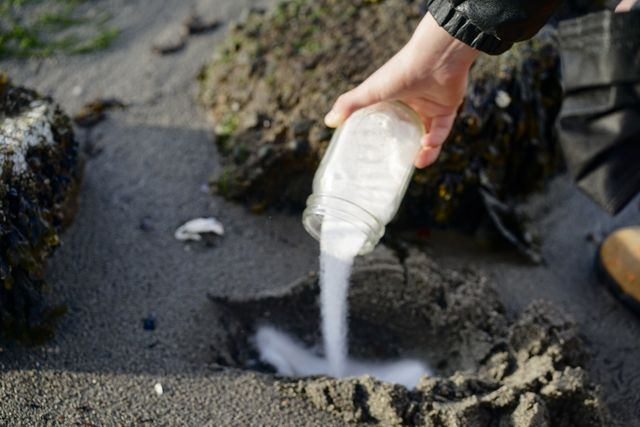

We are two diasporic artists linked by the connective tissue of waters between us and ‘home’: the Indian ocean, the Pacific Coast of the choco region and the Philippine Sea. We are moved by song as living prayer, and the honouring of death~transformation in its right time. We know we are land(s) who rise//strive to keep singing.
mediums: sound. presence. skin. sculpture.

Azul Duque ....
Kyra Royo Fay .....